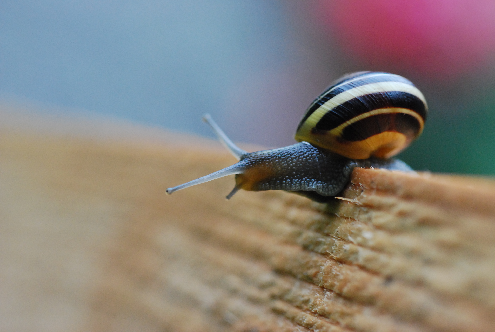
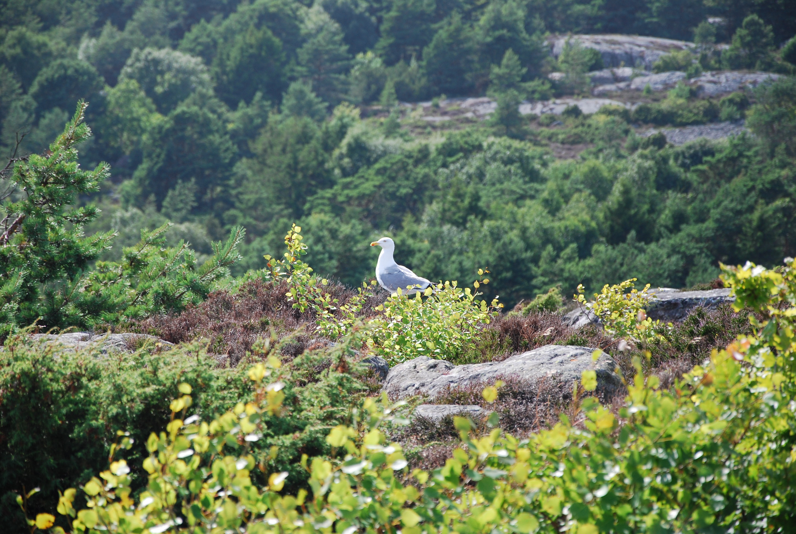
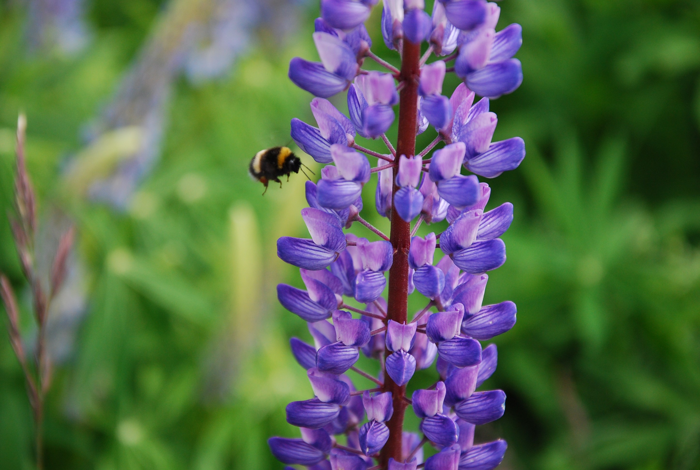
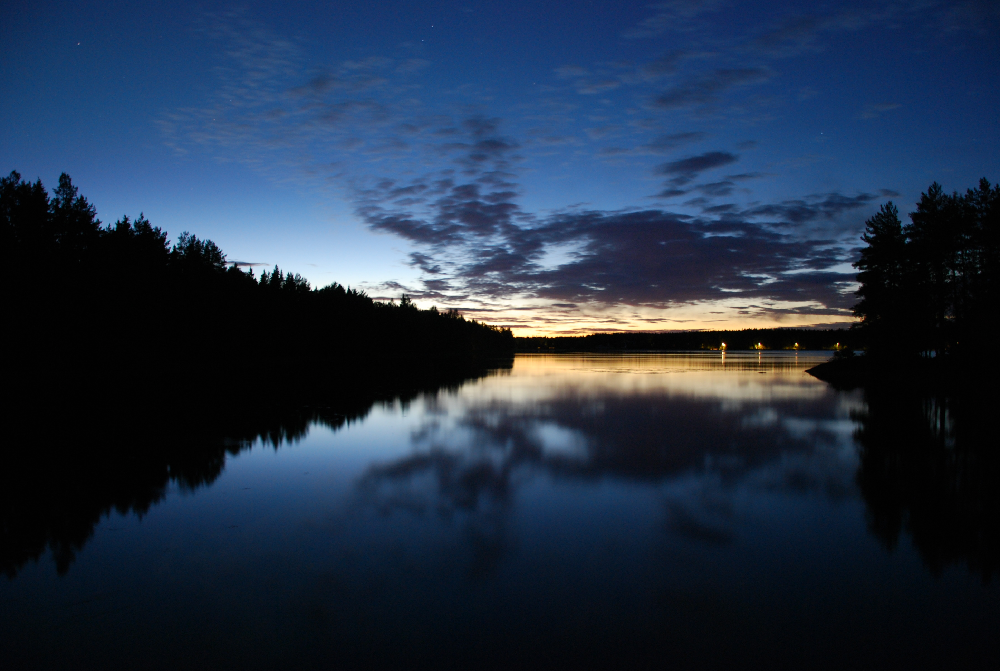
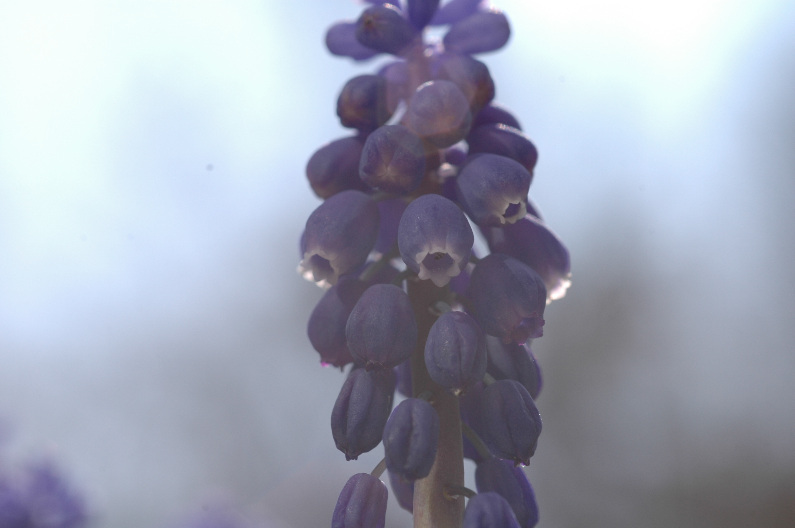
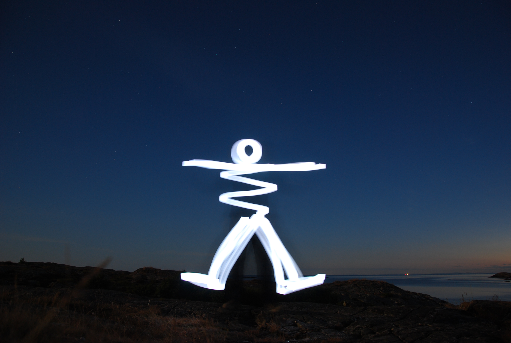

Fotografering
Ett stort intresse som jag har växt upp med är fotografera och jag trivs mycket bättre bakom kameran än framför. Oftast blir det naturbilder men om någon ställer upp så kan jag ta en och annan porträttbild.
Taget vid Nydalasjön, Umeå

Tagen i Hästveda

Tagen i London, framför St Paul's cathedral

Tagen på toppen av Högen, Nordkoster

Tagen i Killeberg

Tagen vid Nydalasjön, Umeå

Tagen i Hästveda

Tagen på Nordkoster